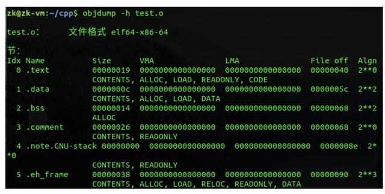
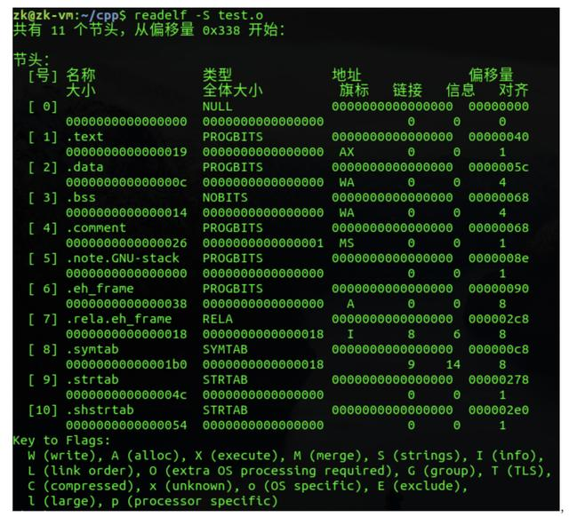
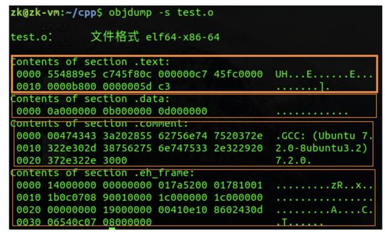
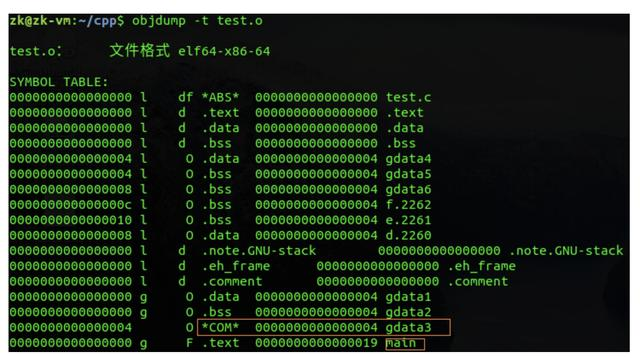
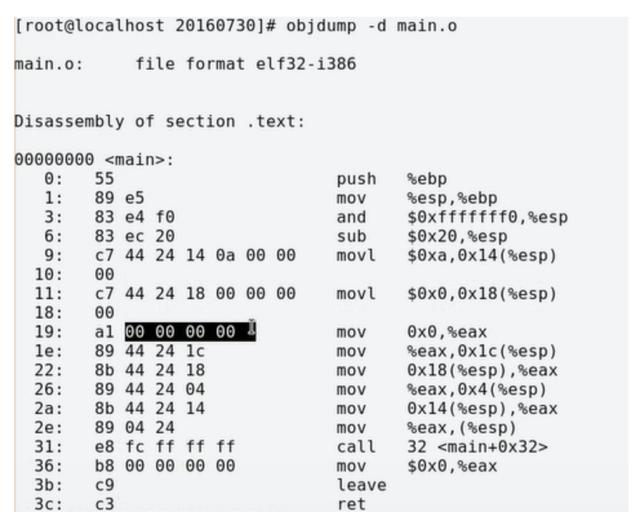
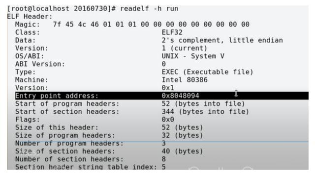
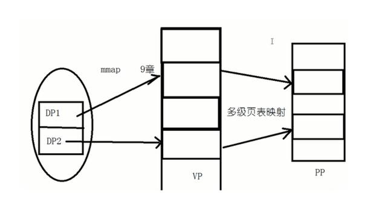

实例：
int gdata1 = 10;
int gdata2 = 0;
int gdata3;
static int gdata4 = 11;
static int gdata5 = 0;
static int gdata6;
int main(void)
{
int a = 12;
int b = 0;
int c;
static int d = 13;
static int e = 0;
static int f;
return 0;
}
一、基本概念
1.什么是数据
大家平时口中经常说程序是由程序代码、数据和进程控制块组成，但是很多人却不知道什么是数据。这里我们搞清楚两件事情，一是什么是数据，二是数据存放在哪里。
(1)数据
数据指的是称序中定义的全局变量和静态变量。还有一种特殊的数据叫做常量。所以上面的的gdata1、gdata2、gdata3、gdata4、gdata5、gdata6、d、e和f均是数据。
(2)数据存放在哪里
数据存放的区域有三个地方：.data段、.bss段和.rodata段。那么你肯定想知道数据是如何放在这三个段中的，怎么区分
对于初始化不为0的全局变量和静态变量存放在.data段，即gdata1、gdata4和d存放在.data段；对于未初始化或者初始化值为0的段存放在.bss段中，而且不占目标文件的空间，即gdata2、gdata3、gdata5、gdata6、e和f存放在.bss段。文章下面有一张关于符号表的图，大家可以看到确实是这样的分布。
而对于字符串常量则存放在.rodata段中，而且对于字符串而言还有一个特殊的地方，就是它在内存中只存在一份。下面给个代码来测试：
#include<stdio.h>
int main(void)
{
const char *pStr1 = "hello,world";
const char *pStr2 = "hello,world";
printf("0x%x\n", pStr1);
printf("0x%x\n", pStr2);
return 0;
}
大家可以验证一下，输出的地址肯定是一样的。因为常量字符串“hello,world”只存在一份。
2.什么是指令
说完了数据，那什么是指令呢？也就是什么是程序代码。很简单，程序中除了数据，剩下的就都是指令了。这里有一个容易混淆的地方，如下面的代码：
#include<stdio.h>
int main()
{
int a = 10;
int b = 20;
printf("a+b=%d\n", a + b);
return 0;
}
大家可能会有一个疑问，就是对于上面的代码，a和b明明是局部变量，难道不是数据吗？嗯，它真的不是数据，它是一条指令，这条指令的功能是在函数的栈帧上开辟四个字节，并向这个地址上写入指定值。
3. 什么是符号
说完数据和指令，接下来是另一个基础而且重要的概念，那就是符号。我们在编写程序完，进行链接时会碰到这样的错误："错误 LNK1169 找到一个或多个多重定义的符号"，即符号重定义。那什么是符号，什么东西会产生符号，符号的作用域又是怎样的呢？
在程序中，所有数据都会产生符号，而对于代码段只有函数名会产生符号。而且符号的作用域有global和local之分，对于未用static修饰过的全局变量和函数产生的均是global符号，这样的变量和函数可以被其他文件所看见和引用；而使用static修饰过的变量和函数，它们的作用域仅局限于当前文件，不会被其他文件所看见，即其他文件中也无法引用local符号的变量和函数。
对于上面的 “找到一个或多个多重定义的符号” 错误原因有可能是多个文件中定义同一个全局变量或函数，即函数名或全局变量名重了。
4.虚拟地址空间布局
对于32位操作系统，每个操作系统都有2^32字节的虚拟地址空间，即4G的虚拟地址空间。这4G的虚拟地址空间分为两个大部分：每个进程独立的3G的用户空间，和所有进程共享的1G的内核空间。具体分布如下图：

二、编译过程
1.编译
整个编译分为四个步骤：首先编写源文件main.c/main.cpp；编写好代码以后进行预编译成main.i文件，预编译过程中去掉注释、进行宏替换、增加行号信息等；然后将main.i文件经过语法分析、代码优化和汇总符号等步骤后，编译形成main.S的汇编文件，里面存放的都是汇编代码；最后一个编译步骤是进行汇编，从main.S变成二进制可冲定位目标文件main.o。
以上四个步骤对应的在linux下的命令为：
gcc -E main.c -o main.i #预编译，生成main.i文件
gcc -S main.i #编译，生成main.S文件
gcc -c main.S #汇编，生成main.o文件
gcc main.o -o main #链接，生成可执行文件
2.二进制可重定位目标文件的结构和布局
首先给出一个二进制可重定位目标文件(linux下是*.o文件，windows中是*.obj文件)的总体布局，简单来说整个obj文件就是由ELF header+各种段组成：

二进制可重定位文件的头部，可以看到ELF header占64个字节，里面存放着文件类型、支持的平台、程序入口点地址等信息，如果你对每个字段的具体含义感兴趣，可以看《程序员自我修养》：

接下来就是目标文件的各个段，从下面可以看到数据和指令在目标文件中是按段的形式组织起来的，而且.text段的起始位置从file off字段可以看到是0x40位置，即64字节处，也说明.text段是接在ELF header后面。

代码段的大小为0x19，起始偏移为0x40，所以.data段的起始偏移应该为0x19+0x40=0x59，但是为了字节对齐，所以。data段的起始地址为0x5c，也即图中file off字段所示，后面的段以此类推。
之后的.bss段会出现两个问题，一个是.bss段的大小应该为4*6=24字节，但是实际上却是20字节；另一个问题就是可以看到.comment段的偏移(file off)也为0x68，这说明.bss段在目标文件中是不占大小的，即.comment和.bss段的偏移相同。对于这两个问题，我这里不作详细介绍，简单说一下。第一个问题，涉及到C语言中的强符号和弱符号概念；第二个问题我们可以这样理解，因为.bss段中存的是初始化为0或者未初始化的数据，而实际未初始化的数据其默认值也为0，这样我们就没必要存它们的初始值，相当于有一个默认值0。
上面的图只列出了部分段，下面查看一下目标文件中所有的段，一共有11个段，简单说明一下，.comment是注释段、.symtab是符号表段。

接下来就是看段的详细内容，可以看到各个段真实的存储内容如下，下面最明显的是.data段，里面存放着gdata1、gdata4和d的值分配为0x0000000a(10)、0x0000000b(11)和0x0000000d(13)，正好与代码中的初始值匹配。注意下面显示的小端模式。

以上就是可重定位目标文件的组成，下面再介绍一下上面提到的符号表如下图，第一列是符号的地址，由于编译的时候不分配地址，所以放的是零地址或者偏移量；第二列是符号的作用域(g代表global，l代表local)，前面讨论了用static修饰过的符号均是local的（不明白的搜一下static关键字的作用），如下图中gdata4/gdata5/gdata6等；第三列表示符号位于哪个段，在这里也能看到gdata1、gdata4和d都存放在.data段中，初始化为0或未初始化的gdata2/gdata5/gdata6等都存放在.bss段：

这里特别说一下gdata3，按上面的分析来说它应该是存放在.bss段，但是我们可以看到它是*COM*，原因在于它是一个弱符号，在编译时无法确定有没有强符号会覆盖它。
以上就是编译的详细过程，不明白的欢迎大家留言，下面再来介绍链接。
三、链接过程
1.链接
链接过程分为两步，第一步是合并所有目标文件的段，并调整段偏移和段长度，合并符号表，分配内存地址；第二步是链接的核心，进行符号的重定位。
(1)合并段
所有相同属性的段进行合并，组织在一个页面上，这样更节省空间。如.text段的权限是可读可执行，.rodata段也是可读可执行，所以将两者合并组织在一个页面上；同理合并.data段和.bss段。
(2)合并符号表
链接阶段只处理所有obj文件的global符号，local符号不作任何处理。
(3)符号解析
符号解析指的是所有引用符号的地方都要找到符号定义的地方。
(4)分配内存地址
在编译过程中不分配地址（给的是零地址和偏移），直到符号解析完成以后才分配地址。如下图，数据的零地址：

(5)符号重定位
因为在编译过程中不分配地址，所以在目标文件所以数据出现的地方都给的是零地址，所有函数调用的地方给的是相对于下一条指令的地址的偏移量。在符号重定位时，要把分配的地址回填到数据和函数调用出现的地方，而且对于数据而言填的是绝对地址，而对函数调用而言填的是偏移量
从上图中我们可以看到gdata1等变量的地址不再是0，而是0x080490e4，正确回填了绝对地址。

从上图中我们可以看到gdata1等变量的地址不再是0，而是0x080490e4，正确回填了绝对地址。
四、可执行程序
链接完成以后形成了可执行文件，下面来解析可执行文件是如何执行起来的。同样，首先给出可执行文件的总体布局，然后再来深入解析。

首先看一下可执行文件的头部，如下图，里面记录了函数的入口点地址为0x08048094(后面会解释这个值的来由)，还有就是size of this headers，程序头部占52个字节，然后还有三个program headers，每个program headers占32字节，共占3*32=96字节，所以程序头部+program heades=52+96=0x94，而从虚拟地址空间布局可知.text段正好是从0x08048000开始的，所以可执行程序的入口点就是0x08048000+0x94=0x08048094：

然后看看这三个program headers里面的内容，第一个load项的属性是可读可执行，其实存放的就是代码段；第二个load项的属性是可读可写，其实存放的就是数据段。这两个load项的意义在于它指示了哪些段会被加载到同一个页面中：

可以看到这两个load项的对齐方式是页面对齐（32位linux操作系统页面大小为4K）。
当双击一个可执行程序时，首先解析其文件头部ELF header获取entry point address程序入口点地址，然后按照两个load项的指示将相应的段通过mmap()函数映射到虚拟页面中（虚拟页面存在于虚拟地址空间中），最后再通过多级页表映射将虚拟页面映射到物理页面

说完编译链接，最后说明如何将VP映射到PP就打工告成了。
分为三步，1.首先是创建虚拟地址到物理内存的映射（创建内核地址映射结构体），创建页目录和页表；2. 再就是加载代码段和数据段；3.把可执行文件的入口地址写到CPU的PC寄存器中。